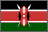
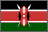

Indigenous signs for countries in Africa

 David Bar-Tzur 
David Bar-Tzur  
- Africa
- (1) [A], PO down, FO > NDS, circles face, starting at the DS ear. For an animation of this sign, see ASL Pro: Africa (1). (2) [O^], PO away, FO up, moves > DS while opening to a [5^], then descends while closing back to a [O^]. For a QuickTime movie of this sign, see NEEDS Outreach: NEEDS Outreach: Africa. (3) (2h)[5^] touch FTS, FOs up, DH moves > DS and descends while closing back to a [O^]. For a QuickTime movie of this sign, see ASL Pro: Africa (2). I have never seen this sign in use, and I used to interpret for a Black Deaf student organization in Rochester, NY for several years.
Flags: World flag database.
Map: Virtual Tourist.
For a quick, interesting resource for facts about this and other countries,
try Mystic Planet - The New Age directory of Planet Earth.
Explanation of glossing system used
(to understand how I describe the signs in this dictionary)
See also Arab World, which contains some countries that are on the African continent.
- Angola (Angola)
- DH [1], PO away, (< its position on the continent?) crosses finger with thumb of [5:], PO away, FO up. For a film of this sign, see Angola - انجولا.
- Benin (Benin)
- (1) [B], PO > signer, FO up, moves away while twisting to PO away from signer.1 (2) [B], PO away, FO up, moves > DS, then down.3
- Botswana (Botswana)
- [B], PO > NDS, FO up, moves straight away from nose 2x. To see a film of this sign, go to Laat het gebaar zien: Botswana.
- Burkina Faso (Burkina Faso)
- [B], PO away, FO up, moves along arm extended > DS, and then changes to an [F]. To see a film of this sign, go to Laat het gebaar zien: Burkina Faso.
- Comoros (Comores)
- NDH [bC], PO > NDS, FO up, is held next to [4], PO > signer, FO > NDS. (< four islands, see map) For a movie of this sign, go to Comoros - جزر القمر.
- Congo (Congo)
- [C], PO > NDS, FO up, circles temple and then touches with thumb.1
- Eritrea (Eritrea)
- [M] touches the radial (thumb) side to the temple and then supinates and touches the ulnar (pinky) side to the temple. For a film of this sign, see Eritrea - إريتريا.
- Ethiopia (
 )
) - (1) [E], PO > NDS, starts at forehead and travels back over head.1 (2) [E], PO > signer, circles forehead.1 (3) [A dot], PO > NDS, circle face in counter clockwise direction and touch nose with the thumb which is still extended.2 (< The initial letter of the name in the Geeze alphabet.)
- Gabon (Gabon)
- [G], PO > NDS, traces moustache.1
- Ghana (Ghana)
- [G], PO > signer, moves from FTs to end of palm of [B], PO up, FO away from signer, 2x.1
- Guinea (Guinée)
- [G], PO > NDS, FO away, moves > NDS above [B] arm, PO down, extended > DS. To see a film of this sign, go to Laat het gebaar zien: Guinee.
- Ivory Coast (Côte d'Ivoire)
- I-C, hand moves away from signer.5
- Kenya (Kenya)
- (1) (2h) or (1h)[bO], FO up, DH higher than NDH, twists POs from > signer to away. For a movie of this sign, see Discovering Deaf worlds, scroll down, and click on the play arrow for "Kenya". (2) [K] touches forehead with back of hand.3
- Mauritania (موريتانيا)
- (2h)[A dot], POs > signer, FOs ><, moves as if DH pulls on coat, and then NDH does so. For a film of this sign, see Mauritania - موريتانيا.
- Mozambique (Moçambique)
- (2h)[B], cross at wrist against chest and let the wrists bend so that POs are down.5
- Namibia (Namibia)
- [modified B with index finger folded into palm], PO > signer, FO down, is held in free space.1 (< shape of country.)
- Niger (Niger)
- [F], bend hand at wrist so that PO > back, FO down.5
- Nigeria (Nigeria)
- (1) [N] touches end of moustache.1 (2) [N], FO away, wiggles while held DS of mouth.3
- Rwanda (Rwanda)
- [R], PO away, FO up, touch nose with dorsal side of hand.5
- South Africa (Suid-Afrika)
- (1) [B^], PO down, moves downward + [5], PO > signer, circles face.3 (< "South" + "Africa" in their sign language.) (2) [S], PO away from signer, moves downwards while twisting and turning into a [C], PO up.4 (< Initialized sign for south + CL to show the placement of the country at the foot of Africa.)
- The Gambia (The Gambia)
- (2h)[1], POs > signer, FOs > opposite side, pass one another twice with DH on a higher level. To see an illustration of this sign, go to GADHOH | Gambian Association of the Deaf & Hard of Hearing: 29 countries 1.jpg 640x434 pixels.
- Togo (Togo)
- (1) [T], PO > signer, rubs chest.1 (2) (2h)[T], POs > signer, alt. beat drums.3
- Zambia (Zambia)
- (2h)[O^], POs > signer, crossed below wrists.1
- Zimbabwe (Zimbabwe)
- [B], PO down, FO away from signer, pulls hand back so that the arm forms a "Z".3
List of sources cited
 1. Signs around the world: Countries [Videotape]. Burtonsville, MD: Sign Media.
1. Signs around the world: Countries [Videotape]. Burtonsville, MD: Sign Media.
2. Native signer informant - Teklehaimanot Derso, 1998.
3. Native sign informant (name lost).
4. Karl Reddy (native sign informant), personal communication, 1998.
5. From a handout I was given that included indigenous signs I have seen in other reference works, so it seems properly researched.

Home